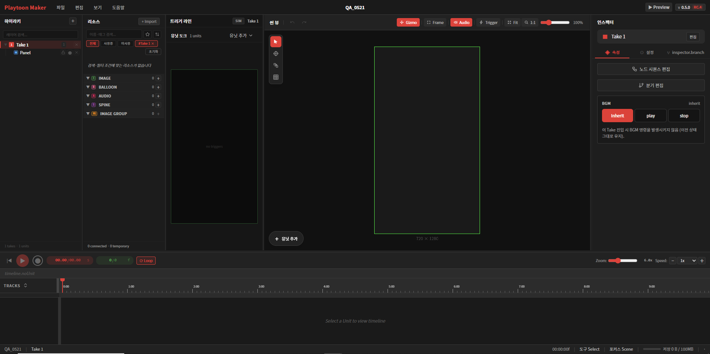
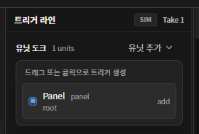
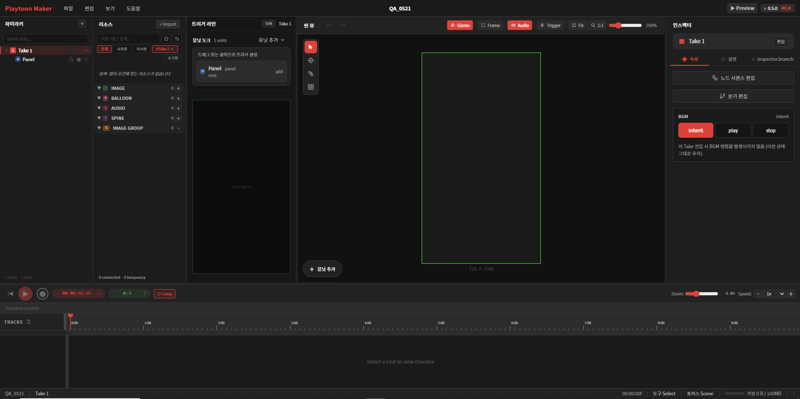
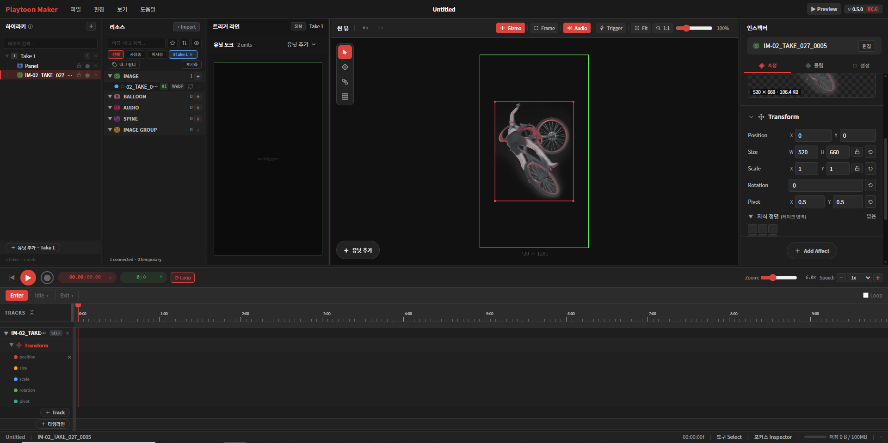

1장시작하기 전에
당신이 곧 만들게 될 것이 무엇인지, 그리고 그것이 왜 특별한지 — 큰 그림을 먼저 그립니다.
당신의 웹툰이 살아 움직인다면
지금까지 웹툰은 ‘보는 것’이었습니다. 독자는 화면을 아래로 내리며 멈춰 있는 그림을 차례로 읽어 갈 뿐이었죠. 그런데 만약, 독자가 화면을 내리는 그 순간 캐릭터가 걸어 들어오고, 빗방울이 떨어지고, 대사가 하나씩 살아나 말을 건다면 어떨까요? 독자가 갈림길에서 직접 선택을 하고, 그 선택에 따라 이야기가 다르게 흘러간다면요?
그것이 바로 인터랙티브 웹툰이고, 플레이툰 메이커는 그것을 당신의 손으로 만들게 해 주는 도구입니다. ‘보는 웹툰’을 ‘함께 노는 이야기’로 바꾸는 일 — 그 시작점에 지금 당신이 서 있습니다.
좋은 소식이 하나 더 있습니다. 코딩은 한 줄도 필요하지 않습니다. 준비한 그림과 소리를 올리고, 무대 위에 배치하고, ‘언제 어떻게 움직일지’를 시간표에 그려 넣기만 하면 됩니다. 마치 연출가가 배우에게 동선을 일러 주듯이 말이죠. 복잡한 기술은 메이커가 알아서 처리합니다. 당신은 이야기에만 집중하면 됩니다.
플레이툰 메이커가 일하는 방식 — 스크롤과 테이크
플레이툰 웹툰은 일반 웹툰과 똑같이 위에서 아래로 스크롤하며 읽습니다. 독자에게 익숙한 그 방식 그대로입니다. 다른 점은, 화면을 내릴 때마다 멈춘 그림이 아니라 살아 움직이는 한 장면이 펼쳐진다는 것입니다.
이 ‘한 장면’의 단위가 바로 테이크(Take)입니다. 영화에서 한 컷을 ‘테이크’라 부르듯, 플레이툰에서도 하나의 테이크가 하나의 살아 있는 장면을 담습니다. 독자가 스크롤로 한 테이크에 들어서면 그 안의 애니메이션이 시작되고, 캐릭터가 움직이고 소리가 흐르고, 때로는 독자의 터치를 기다립니다. 그리고 다시 스크롤하면 다음 테이크로 — 다음 장면으로 넘어갑니다.
※ 이 설명서는 현재 버전(v0.6.0 RC.5) 기준으로, 세로 16:9 웹툰을 테이크 단위로 만드는 작업을 다룹니다.
그래서 작품을 만드는 일은 이렇게 정리됩니다. 테이크라는 장면을 쌓아 이야기의 흐름을 만들고, 각 테이크 안을 움직임으로 채우고, 독자가 반응할 지점을 심는 것. 이 설명서는 바로 그 순서를 따라갑니다.
작업의 전체 흐름
작품 하나를 완성하기까지는 대체로 다음 순서를 따릅니다. 이 설명서도 이 순서를 그대로 따라갑니다.
| 단계 | 하는 일 | 관련 장 |
|---|---|---|
| ① 준비 | 그릴 장면, 등장 그림, 대사, 소리를 미리 준비합니다(메이커 밖에서). | 1장 |
| ② 만들기 | 새 프로젝트를 만들고 화면 단위(유닛)를 배치합니다. | 3장 |
| ③ 채우기 | 그림·말풍선·소리를 올리고 화면에 배치합니다. | 4장 · (5장 예정) |
| ④ 움직이기 | 각 요소가 등장·유지·퇴장하며 어떻게 움직일지 설정합니다. | 4장 |
| ⑤ 반응 넣기 | 독자의 터치·선택에 반응하는 인터랙션을 설정합니다. | 5장 예정 |
| ⑥ 확인·발행 | 독자 입장에서 미리보고, 저장·발행합니다. | 6~7장 예정 |
시작하는 두 가지 방법
플레이툰 메이커는 다음 흐름으로 시작합니다. 먼저 랜딩 페이지에서 시작하기를 누르면 계정 만들기 / 로그인 페이지로 이어지고, 로그인하면 내 작업 공간인 워크스페이스가 열립니다. 워크스페이스에서는 진행하던 프로젝트를 이어서 할지, 새 프로젝트를 시작할지를 고르며, 선택하면 비로소 에디터 창으로 들어옵니다.
에디터에 들어오면 가장 먼저 새 프로젝트 창이 나타납니다. 여기서 두 갈래로 시작할 수 있습니다.

가. 새로 만들기 — 템플릿(작품 화면 비율)을 고르고 에피소드 이름을 입력한 뒤 프로젝트 생성을 누릅니다. 현재 버전에서는 세로형 세로 16:9 (720 × 1280) 하나를 제공합니다. 세로로 스크롤하는 웹툰에 맞춘 크기이며, 만든 뒤 프레임 하단을 드래그해 높이를 자유롭게 늘릴 수 있습니다.
나. 이어서 작업하기 — 이미 만들어 둔 프로젝트 파일이 있다면, 창 위쪽의 파일 열기를 눌러 .pmp 파일을 불러옵니다. .pmp는 플레이툰 메이커의 프로젝트 저장 파일 형식입니다.
2장화면 둘러보기
프로젝트를 만들면 나타나는 작업 화면을 구역별로 익힙니다. 각 구역의 이름과 역할만 알아도 이후 설명이 쉽게 읽힙니다.

① 상단 바 — 맨 위 가로 막대
왼쪽에 Playtoon Maker 로고, 가운데에 메뉴(파일 · 편집 · 보기 · 도움말)와 현재 프로젝트 이름이 있습니다. 오른쪽 끝에는 작품을 독자 화면처럼 확인하는 ▶ Preview 버튼과 프로그램 버전(v 0.6.0 RC.5)이 표시됩니다.
② 계층(Hierarchy) — 가장 왼쪽 패널
작품의 구조를 나무가지처럼 보여 주는 곳입니다. 테이크(Take) 안에 유닛이 들어가는 형태로, 지금은 Take 1 ▸ Panel이 보입니다. 맨 위 검색창으로 특정 요소를 빠르게 찾을 수 있습니다. (테이크·유닛 개념은 3장에서 설명합니다.)
③ 리소스 — 두 번째 패널
작품에 쓸 재료(그림·소리 등)를 보관하는 창고입니다. 위쪽 + Import 버튼으로 파일을 올리고, 아래는 재료 종류별로 나뉩니다.
| 종류 | 담는 것 |
|---|---|
| IMAGE | 배경·사물 등 일반 이미지 |
| BALLOON | 말풍선 |
| AUDIO | 효과음·배경음악 등 소리 |
| SPINE | 관절이 움직이는 캐릭터 애니메이션(스파인) |
| IMAGE GROUP | 여러 이미지를 묶은 그룹 |
④ 트리거 라인 — 세 번째 패널
웹툰의 세로 스크롤 흐름에 맞춰, 각 유닛이 화면 어느 지점에서 나타날지(발동될지)를 배치하는 곳입니다. 독자가 스크롤을 내리다 특정 지점에 닿으면 그 유닛의 움직임이 시작되는데, 그 ‘시작 지점’을 여기서 정합니다. 유닛 추가 버튼으로 흐름에 배치할 유닛을 더합니다.
역할을 나눠 보면, 트리거 라인은 “언제(어느 스크롤 위치에서) 나타날지”를 큰 흐름으로 잡는 곳이고, 아래의 타임라인은 그 유닛이 나타난 뒤 “어떻게 움직일지”를 정밀하게 짜는 곳입니다. (이 둘의 관계는 5장에서 자세히 다룹니다.)
⑤ 씬 뷰 — 가운데 가장 큰 화면
독자가 보게 될 실제 화면을 미리 보면서 꾸미는 무대입니다. 가운데 초록 테두리가 작품 화면 영역(720×1280)입니다. 왼쪽에는 선택·이동 같은 도구 아이콘이, 위쪽 오른편에는 보기 옵션과 화면 맞춤(Fit · 1:1)·확대 비율이 있습니다.
위쪽 오른편의 보기 옵션 네 가지는 화면에 무엇을 함께 보여 줄지 켜고 끄는 스위치입니다.
| 옵션 | 역할 |
|---|---|
| Gizmo | 선택한 요소의 위치·크기 조절 손잡이를 표시합니다. |
| Frame | 작품 화면의 경계(프레임) 테두리를 표시합니다. |
| Audio | 소리 요소를 미리듣기 등으로 함께 다룰 수 있게 합니다. |
| Trigger | 독자의 반응을 받는 지점(트리거)을 화면에 표시합니다. |
⑥ 인스펙터 — 가장 오른쪽 패널
지금 고른 요소의 세부 속성을 편집하는 곳입니다. 속성 · 설정 등의 탭이 있고, 인터랙션을 만드는 노드 시퀀스 편집·분기 편집 진입 버튼도 여기 있습니다(5장에서 다룸). 아무것도 고르지 않으면 "유닛을 선택하면 속성을 편집할 수 있습니다"라고 안내됩니다.
⑦ 타임라인 — 맨 아래 가로 영역
시간 흐름에 따라 움직임을 배치하는 시간표입니다. 위쪽에 재생·반복(Loop)·속도 조절이, 아래쪽 TRACKS 영역에 시간 눈금(0:00, 1:00 …)이 있습니다. 유닛을 골라야 내용이 채워지며, 4장의 주 무대입니다.
※ 화면 속 메뉴 명칭(영문·한글 표기)은 현재 개발 중이며 이후 변경될 수 있습니다. 이 설명서는 v0.6.0 RC.5 화면을 기준으로 작성되었습니다.
3장첫 프로젝트 만들기
작품의 뼈대인 ‘테이크’와 ‘패널’이 어떻게 구성되는지 익히고, 다음 장면을 어떻게 이어 가는지 살펴봅니다.
작품의 구조: 테이크와 패널
본격적으로 만들기 전에 세 단어만 익히면 됩니다.
| 용어 | 쉬운 뜻 |
|---|---|
| 테이크(Take) | 하나의 살아 있는 장면. 영화에서 한 장면을 ‘테이크’라 부르듯, 역동적으로 움직이는 한 장면의 단위입니다. 독자는 스크롤로 테이크를 차례로 넘기며 이야기를 봅니다. 새 프로젝트에는 Take 1이 자동으로 하나 만들어져 있습니다. |
| 패널(Panel) | 장면의 내용이 담기는 틀. 테이크를 만들면 그 안에 패널이 기본으로 하나 자동 생성됩니다. 웹툰의 컷 칸처럼, 그림과 움직임이 이 틀 안에 담깁니다. 작가의 연출 의도에 따라 한 테이크에 패널을 둘 이상 두어 한 장면 안에서 여러 컷을 함께 연출할 수도 있습니다. |
| 유닛(Unit) | 장면에 등장하는 개별 요소. 패널도 유닛의 한 종류이며, 필요하면 유닛 추가로 요소를 더 넣을 수 있습니다. |
장면에 요소 추가하기
새 테이크에는 패널이 이미 들어 있으므로, 곧바로 그 안을 채우면 됩니다. 패널을 하나 더 두거나 다른 요소를 넣고 싶을 때는 유닛 추가를 사용합니다.
- 씬 뷰 가운데(또는 트리거 라인)의 ＋ 유닛 추가 버튼을 누릅니다.

- 추가할 수 있는 유닛 목록이 펼쳐집니다.
- 항목 오른쪽의 add를 눌러 추가합니다.

유닛을 고르면(또는 패널을 선택하면) 세 곳이 함께 반응합니다.

- 씬 뷰에 그 유닛을 나타내는 박스가 표시됩니다(기본 크기 100×80).
- 인스펙터에 속성이 채워집니다 — Source(화면 영역 설정), Transform(위치·크기·회전 등).
- 타임라인 왼쪽에 Enter · Idle · Exit 세 개의 상태 탭이 나타납니다.
인스펙터에서 위치와 크기 정하기
인스펙터의 Transform 항목에서 유닛의 자리를 잡습니다.
| 속성 | 뜻 |
|---|---|
| Position | 화면에서의 위치(X·Y) |
| Size | 가로(W)·세로(H) 크기 |
| Scale | 배율(1이 기본, 2면 두 배) |
| Rotation | 회전 각도 |
| Pivot | 회전·크기 변화의 기준점(0.5·0.5가 중심) |
다음 장면 만들기 — 새 테이크 추가
한 장면을 다 꾸몄다면, 다음 장면은 새 테이크로 만듭니다. 계층 패널 오른쪽 위의 ＋ 버튼을 누르면 Take 2가 생기고, 그 안에 패널이 다시 기본으로 하나 들어 있습니다. 이렇게 테이크를 쌓아 가면 독자가 스크롤로 넘기는 장면들이 차례로 이어집니다.

Take 2 — 그 아래 패널이 자동으로 함께 생성됨4장리소스 채우기
패널을 만들었다면, 이제 그 안을 채울 차례입니다. 애니메이션에 쓸 그림·소리·캐릭터 같은 재료(리소스)를 메이커로 가져옵니다.
어떤 재료를 올릴 수 있나
패널에 생명을 불어넣으려면 먼저 재료가 필요합니다. 플레이툰 메이커는 여섯 가지 종류의 파일을 받아들입니다.
| 종류 | 받는 파일 형식 | 쓰임 |
|---|---|---|
| Image | PNG · JPG · WebP · GIF | 배경·사물 등 일반 이미지 |
| Audio | MP3 · WAV (자동 AAC 변환) | 효과음·배경음악 등 소리 |
| Balloon | PlayToon Balloon (.bln) | 플레이툰 전용 말풍선 |
| Spine | Spine 폴더 (.json + .atlas + .png) | 관절이 움직이는 캐릭터 애니메이션 |
| PSD | Photoshop PSD | 포토샵 작화 파일 |
| Clip Studio | Clip Studio (.clip) | 클립스튜디오 작화 파일 |
.bln 형식을 사용하고, 소리(Audio)는 올릴 때 자동으로 AAC로 변환됩니다.리소스 임포트 창 열기
재료를 가져오는 창은 두 가지 방법으로 열 수 있습니다.
- 리소스 패널 위쪽의 ＋ Import 버튼을 누릅니다. (모든 종류를 고를 수 있는 상태로 열립니다.)
- 또는 리소스 패널의 각 칸(IMAGE · BALLOON · AUDIO · SPINE 등) 오른쪽 ＋ 버튼을 누릅니다. (그 종류가 선택된 채로 열립니다.)

가져오기 5단계
임포트 창은 위쪽에 표시된 다섯 단계를 차례로 거칩니다. 대부분은 메이커가 자동으로 처리하므로, 사용자는 재료를 고르고 시작만 누르면 됩니다.
| 단계 | 하는 일 |
|---|---|
| ① 카테고리 | 가져올 재료 종류(Image·Audio·Balloon·Spine·PSD·Clip Studio)를 고릅니다. |
| ② 옵션 | 가져오기 세부 옵션을 정합니다. PSD·Clip Studio처럼 여러 레이어가 든 파일은 이 단계에서 어떤 레이어를 가져올지 고릅니다(아래 설명). |
| ③ 충돌 | 가져오려는 이미지가 이미 등록된 리소스와 같을 때(중복) 처리 방법을 정합니다(아래 설명). |
| ④ 진행 | 가져오기가 진행됩니다. |
| ⑤ 완료 | 가져오기가 끝나고 재료가 리소스 패널에 추가됩니다. |
파일을 고르는 방법은 두 가지입니다. 창 가운데 영역에 내 컴퓨터의 파일을 끌어다 놓거나, ⬆ 파일 추가 버튼을 눌러 고릅니다. 여러 파일을 한 번에 가져올 수 있습니다. 다 고른 뒤 오른쪽 아래 임포트 시작을 누르면 가져오기가 실행됩니다.
가져온 재료는 종류에 따라 리소스 패널의 해당 칸에 자동으로 정리됩니다. 이렇게 채운 재료를 씬 뷰(무대)로 끌어다 놓아 화면을 구성하게 됩니다.
PSD · Clip Studio 레이어 골라 가져오기
PSD나 Clip Studio 파일은 그림이 여러 레이어로 나뉘어 있습니다. 가져오기 옵션 단계에서는 파일 안의 레이어 목록을 보여 주고, 작업에 필요한 레이어만 골라 가져올 수 있습니다.

- 각 레이어 왼쪽 체크박스로 가져올지 말지를 정합니다. 맨 위 전체 선택으로 한 번에 켜고 끌 수 있습니다.
- 레이어 오른쪽 눈 아이콘으로 미리보기를 켜고 끌 수 있습니다.
- 필요 없는 레이어(빈 레이어, 메모용 레이어 등)는 체크를 꺼서 빼고 가져올 수 있습니다.
- 아래쪽 ImageGroup으로 등록을 누르면 선택한 레이어들이 하나의 이미지 그룹으로 묶여 등록됩니다(리소스 패널의 IMAGE GROUP 칸).
중복 이미지 처리 — 충돌 단계
가져오려는 이미지가 이미 등록된 리소스와 똑같은 이미지일 때 ‘충돌’이 발생합니다. 이때 두 가지로 처리할 수 있습니다.
- 제외하기 — 중복된 이미지는 가져오지 않고 기존 것을 그대로 사용합니다(불필요한 중복 방지).
- 그대로 쓰기 — 중복이어도 가져오면, 기존 것과 구분할 수 있도록 태그가 자동으로 생성되어 붙습니다.
패널의 화면 영역 설정 — Source
패널을 고르면 인스펙터에 Source 항목이 보입니다. 패널이 차지하는 화면 영역과 그 안쪽 여백을 정하는 곳으로, 다음 두 가지만 알면 충분합니다.
| 항목 | 뜻 |
|---|---|
| Frame Mode | 패널의 화면 영역을 어떤 기준으로 잡을지 정하는 방식입니다. 기본값 none은 특별한 기준 없이 그대로 두는 상태입니다. |
| Content Inset | 패널 안쪽의 안전 여백(위·아래·왼쪽·오른쪽, 단위 px)입니다. 내용이 가장자리에 붙지 않도록 여백을 줍니다. |
5장움직임 만들기
유닛이 화면에 등장하고, 머물고, 사라지는 동안 어떻게 움직일지를 시간표(타임라인)에 그려 넣습니다. 플레이툰 메이커 연출의 핵심입니다.
움직이기 전 준비 — 이미지를 무대에 올리기
움직임을 만들려면 먼저 움직일 대상이 무대에 올라와 있어야 합니다. 4장에서 가져온 이미지를 다음 순서로 무대에 올립니다.
- 리소스 패널에 이미지가 들어 있는지 확인합니다(IMAGE 칸).
- 그 이미지를 드래그해서 계층(Hierarchy) 창에 놓습니다. 그러면 계층에 이미지 레이어가 생기고, 씬 뷰 무대에도 그 이미지가 나타납니다.
- 레이어를 선택하면 인스펙터에 Source(Type: single, Asset: 파일명)와 Transform이 표시됩니다.
- 하단 타임라인에서 Enter를 누르면, 이 레이어의 프레임(움직임)을 조절할 수 있는 상태가 됩니다.

세 가지 상태: 등장 · 유지 · 퇴장
모든 유닛은 세 개의 ‘상태’를 가집니다. 타임라인 왼쪽 위의 탭으로 전환합니다.
| 상태 탭 | 의미 | 예시 |
|---|---|---|
| Enter (등장) | 유닛이 화면에 처음 나타나는 순간의 연출 | 아래에서 위로 떠오르며 등장 |
| Idle (유지) | 화면에 머무는 동안 반복되는 연출 | 제자리에서 살짝 흔들림 |
| Exit (퇴장) | 유닛이 화면에서 사라질 때의 연출 | 투명해지며 사라짐 |

상태 탭(예: Enter)을 누르면 타임라인 왼쪽에 해당 유닛의 트랙 영역이 열리고, ＋ Track(트랙 추가)과 ＋ 타임라인 버튼이 나타납니다.
트랙 추가하기
‘트랙’은 한 가지 움직임을 담는 줄입니다. ＋ Track을 누르면 추가할 움직임 종류를 고를 수 있습니다.
| 트랙 종류 | 다루는 움직임 |
|---|---|
| Transform | 위치·크기·회전 등 형태 변화 (가장 기본) |
| Color | 색상·투명도 변화 |
| Depth | 앞뒤 순서(겹침) 변화 |
| Audio | 소리 재생 |
| Image Effect | 흐림·발광 같은 이미지 효과 |
| Tween | 두 값 사이를 부드럽게 이어 주는 보간 |
| Mesh | 이미지를 그물망처럼 변형해 휘거나 출렁이게 하는 효과 |
예시: Transform 트랙
가장 자주 쓰는 Transform을 골라 보겠습니다. 추가하면 타임라인에 색으로 구분된 속성 줄이 펼쳐집니다.

각 속성 줄(position·size·scale·rotation·pivot)의 시간축 위에 값을 지정해 두면, 그 사이를 메이커가 자연스럽게 이어 움직임을 만듭니다. 예를 들어 시작 시점 크기를 작게, 잠시 뒤 크기를 크게 지정하면 ‘점점 커지며 등장’하는 연출이 됩니다.
값 지정하기 — 키프레임
움직임은 키프레임(◆)으로 만듭니다. 키프레임은 ‘몇 번째 프레임에서 이 속성이 어떤 값이어야 하는지’를 표시한 점입니다. 서로 다른 두 지점에 값을 다르게 찍으면, 그 사이는 메이커가 자동으로 이어 부드러운 움직임이 됩니다.
- 움직이고 싶은 속성 줄(예:
position)에서 원하는 시간 위치에 키프레임을 찍습니다. 타임라인에 다이아몬드(◆) 표시가 생깁니다. - 그 키프레임을 누르면 편집창이 열립니다. frame(프레임 번호)과 value(값, 예: position은 x·y)를 지정합니다.
- 다른 시간 위치에 키프레임을 하나 더 찍고 값을 다르게 주면, 두 값 사이가 이어지며 움직임이 만들어집니다.


＋ 타임라인과 ＋ Track의 역할 차이 ② ‘보간 편집’·‘다른 액션으로 보내기’ 등 키프레임 편집창의 추가 옵션 설명 수위 ③ Idle 상태의 반복(Loop) 동작 방식.